Префектура Ибараки · Цутиура · фестиваль
Фейерверки Цутиуры: осенний конкурс, где пиротехники соревнуются в мастерстве
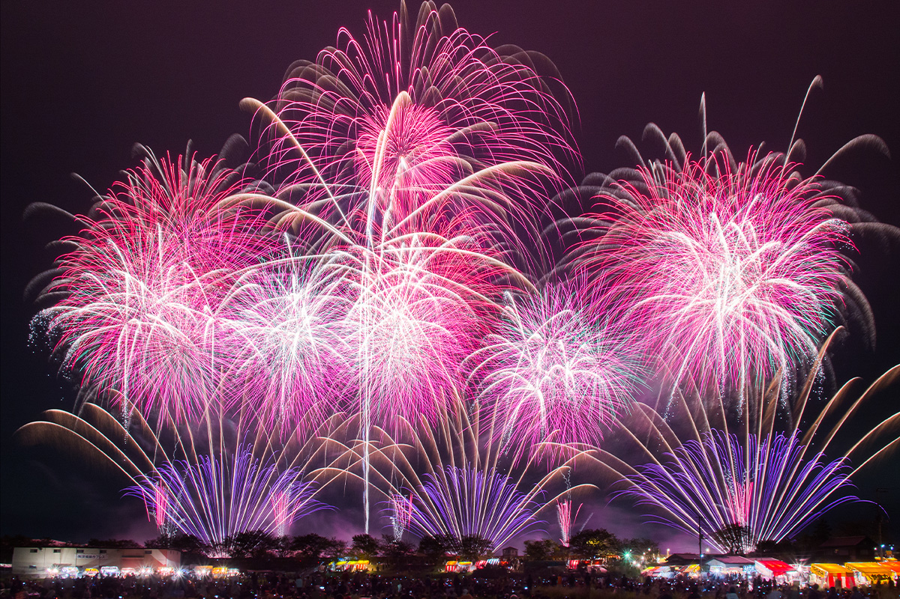
Фейерверки в Японии считаются приметой лета, но один из самых известных фестивалей страны проходит осенью. Всеяпонский конкурс фейерверков в Цутиуре задуман не ради туристов: здесь пиротехники меряются мастерством.
История
Идея настоятеля храма
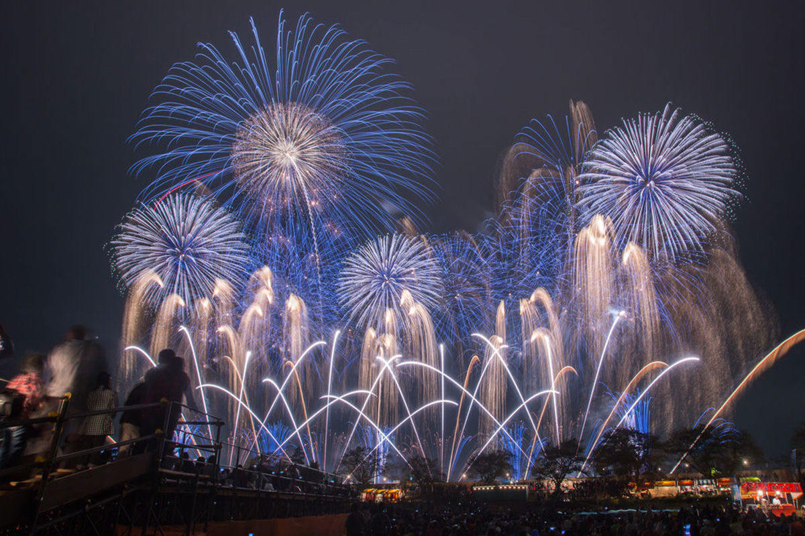
Многие курорты устраивают фейерверки в любое время года, чтобы привлечь гостей. В Цутиуре цель другая, и она есть в самом названии: Всеяпонский конкурс фейерверков. Его проводят, чтобы пиротехники оттачивали своё ремесло.
Первый конкурс прошёл в 1925 году. С первого по пятый его устраивало буддийское общество, и у праздника было сразу несколько задач: почтить память военных из морской авиагруппы с соседнего озера Касумигаура, погибших на службе, оживить торговлю в городе и поблагодарить небо за осенний урожай.
Общество основал Байхо Акимото (1882–1934), настоятель храма Синрю-дзи в Цутиуре. Образцом для него стал конкурс фейерверков при святилище Касама Инари. Конкурсом его дела не ограничились: настоятель занимался многими благотворительными и общественными проектами, и в городе его до сих пор уважают как человека, который много сделал для родных мест.
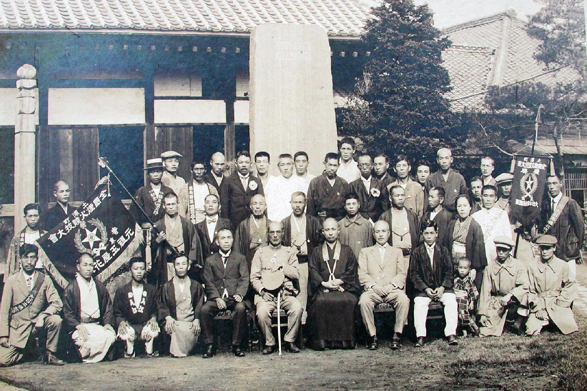
Мастер
Пиротехник, который учил всю страну
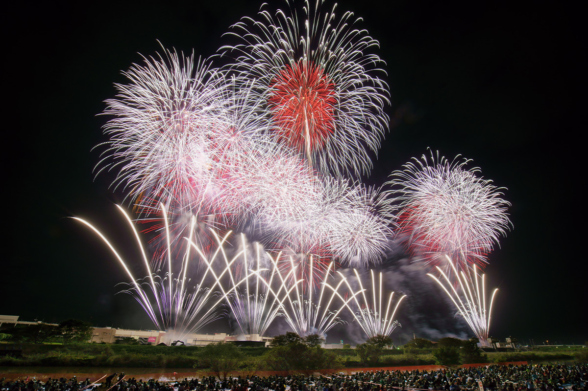
В истории конкурса есть ещё одно важное имя: Гиити Китадзима (1908–1979). Он вырос в семье, которая делала фейерверки с эпохи Мэйдзи, долго учился ремеслу и открыл собственное дело. После войны он основал компанию «Цутиура Како» и собрал множество наград на конкурсах по всей Японии. Китадзиму считают одним из главных пиротехников середины XX века.
Одну из самых известных его работ, «Виноградный дым», впервые запустили, как считается, в первое послевоенное десятилетие. Это дневной фейерверк: фиолетовый дым, который тогда было очень трудно получить, в сочетании с парашютами. Для своего времени он был смелой новинкой.
Китадзима охотно учил молодых. Ученики приезжали к нему со всей страны и потом увозили знания домой, так что уровень японской пиротехники поднялся повсюду. Но красивыми фейерверками его заслуги не исчерпываются: он добивался уважения к профессии пиротехника и много сделал для безопасности запусков.
Конкурс
Мечта каждого мастера
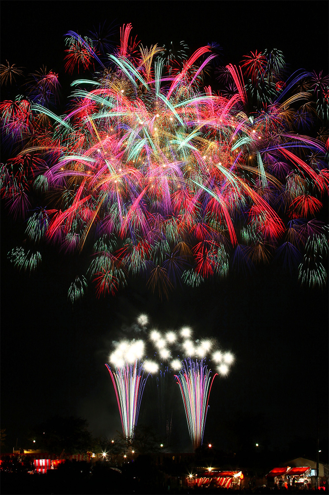
В 2022 году в конкурсе участвовали около 50 пиротехнических мастерских. Они соревнуются в трёх категориях: одиночные крупные шары 10-го калибра, стармайн (серия залпов, собранная в одну композицию) и творческие фейерверки. На знаменитом конкурсе в Омагари, в префектуре Акита, круг участников заранее определён, а в Цутиуре таких ограничений нет. Выступать во всех трёх категориях тоже не обязательно: можно заявить только шары или только творческую программу.
Когда-то стармайн едва не превратился в соревнование по количеству: чем больше зарядов, тем ярче и эффектнее. Конкурс в Цутиуре ограничил число шаров и труб, и мастера вернулись к тому, в чём сила стармайна: к качеству каждого шара, общей композиции и точному моменту запуска. Поэтому победа в категории стармайна в Цутиуре особенно почётна, и мастера часто готовят для Цутиуры специальные версии, где сплетают самые разные виды фейерверков.
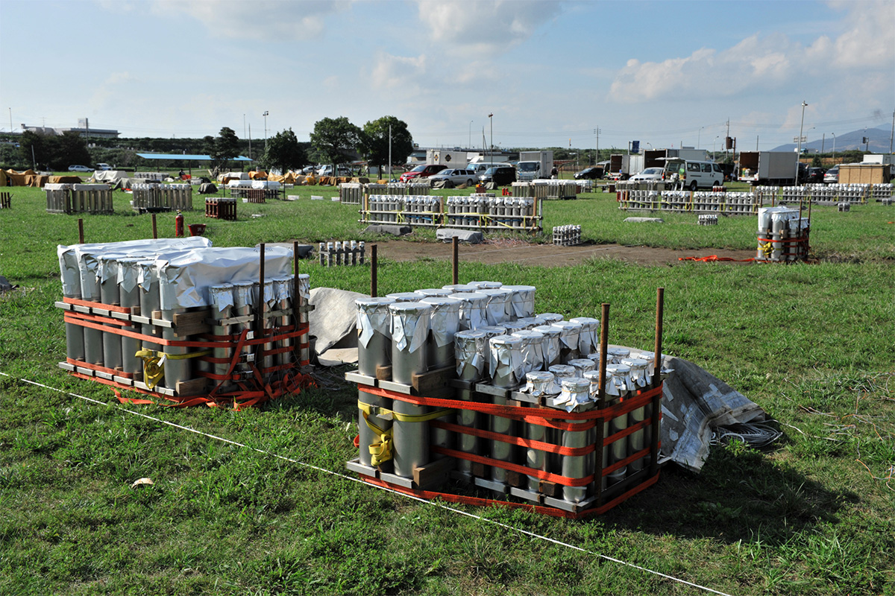
Как смотреть
Ровный берег, видный издалека
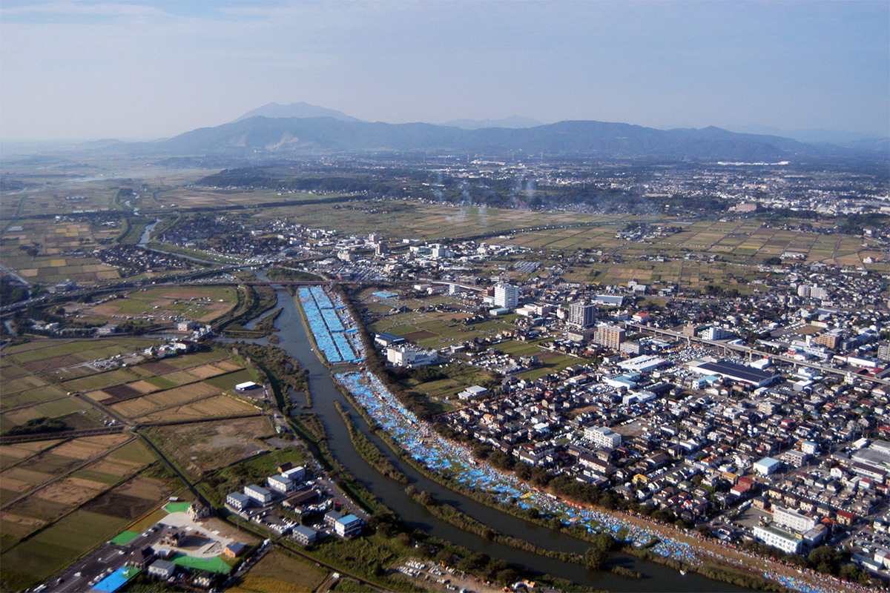
Кроме конкурсных номеров в середине и в конце вечера организаторы запускают свои фейерверки. Это огромный широкий стармайн, которым славится Цутиура, и серии крупных шаров одна за другой. Эти номера не участвуют в соревновании, но для многих зрителей они становятся главным событием вечера.
Для зрителей устраивают платные места на циновках, и тянутся они примерно на 450 метров. Но и без билета фейерверки хорошо видно отовсюду в радиусе около 500 метров от места запуска, со всех сторон. От станции Цутиура до места идут автобусы, хотя многие идут пешком, заглядывая по пути в торговые палатки. До Токио на скором поезде около часа, поэтому на праздник съезжается много гостей, в основном из соседних префектур. Конкурс давно стал приметой долгих осенних вечеров.
В 2026 году конкурс пройдёт 7 ноября, с 17:30 до 20:00; в непогоду его перенесут на 14 ноября.
Награды
Работы лауреатов
Ниже показаны работы, отмеченные наградами конкурса.
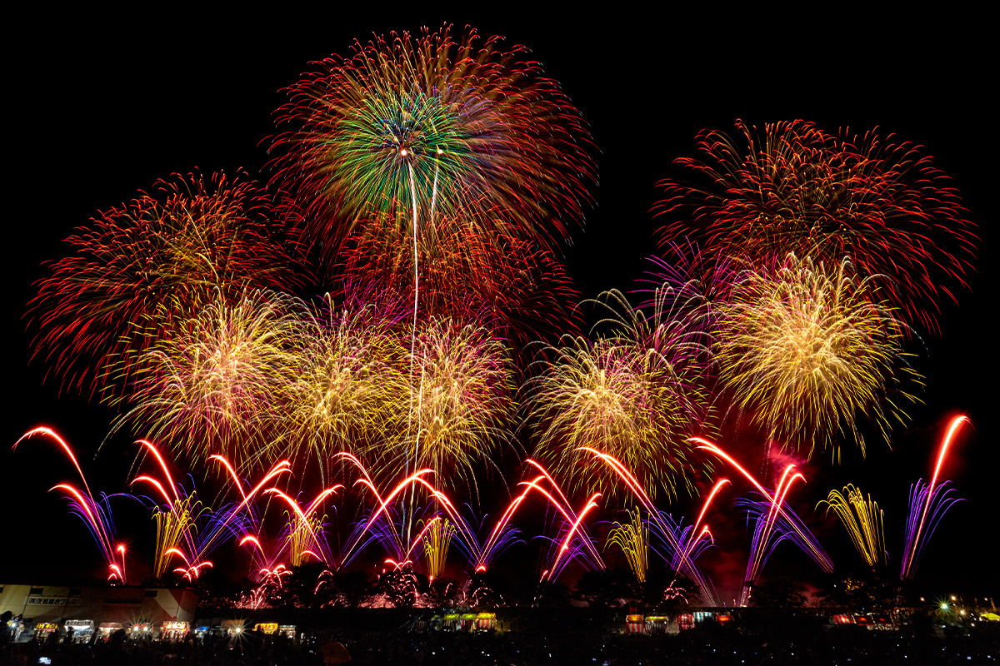
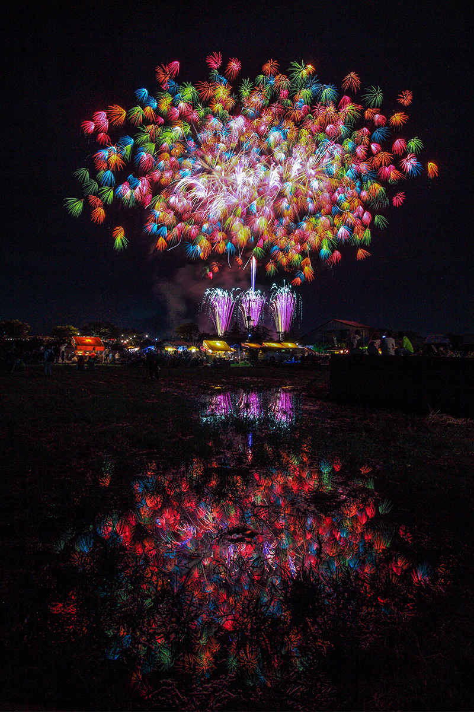
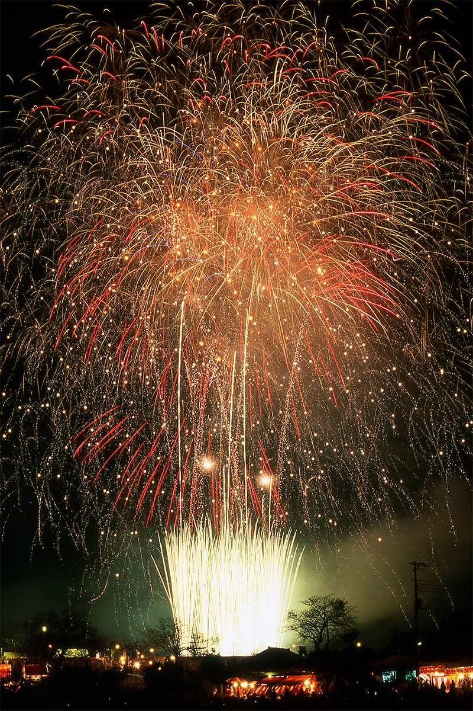
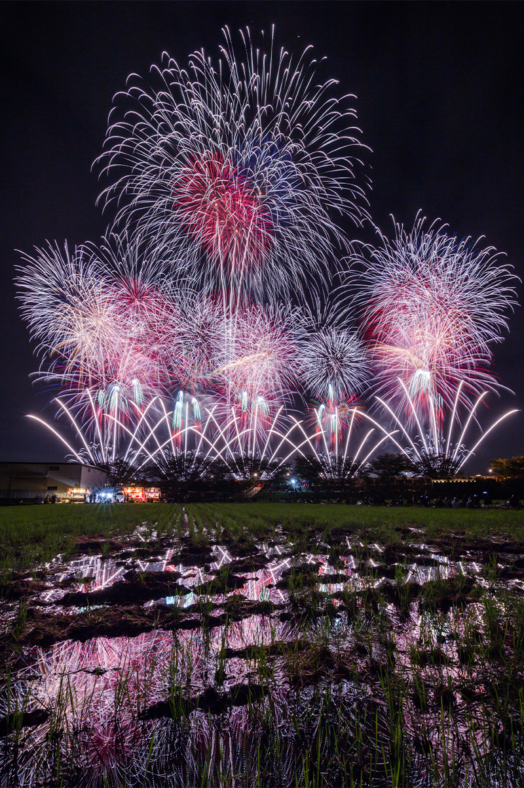
Всеяпонский конкурс фейерверков в Цутиуре
- Даты
- первая суббота ноября, начало в 17:30
- Адрес
- префектура Ибараки, Цутиура, берег реки Сакурагава у моста Гакуэн-охаси
- Телефон
- +81 29-826-1111